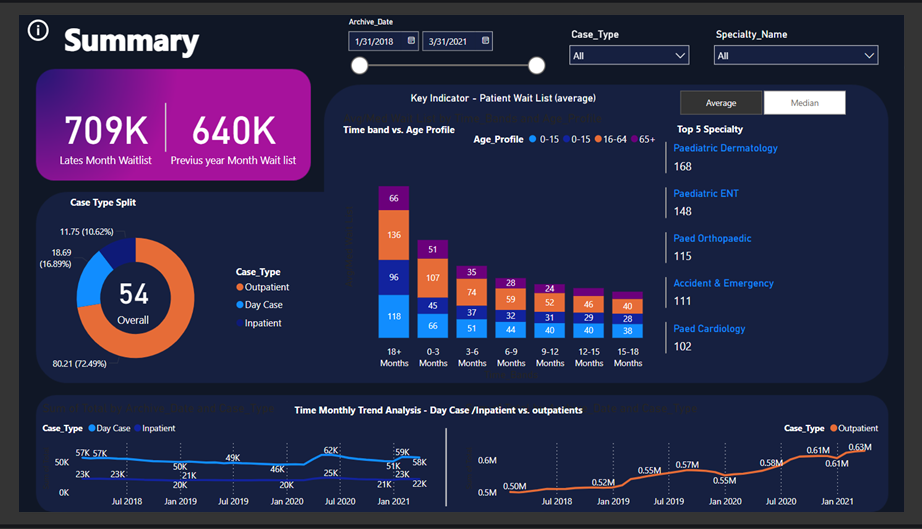

Nur Mohammad Arola
Data Analyst
Welcome to my portfolio! I'm Nur, a data analyst with a knack for problem-solving and a love for exploring data. My engineering background has given me a unique perspective on data analysis, and I'm excited to share my journey of uncovering insights and discovering new opportunities. Let's dive to the world of data and see what we can uncover together!
Download CVData-Driven and Dedicated
Aspiring Data Analyst Ready to Make an Impact
With a background in chemical engineering and experience as a reporting analyst, I've developed strong analytical and problem-solving skills. I'm inspired by the power of data to drive innovation and solve complex problems.
I am excited to apply my technical expertise in data analysis to uncover actionable insights and make a significant impact in the field.
LinkedIn ProfileData Processing and Management Tools
-
Python
-
Power BI
-
Excel
-
VBA
-
SQL
-
VS Code
-
Tableau
-
C++
-
Matlab
Data Analysis and Visualization
Portfolio
Check out some of the case studies I made as a Data Analyst.
-

Examining High-Demand Medical Fields
This report explores the most popular areas in healthcare that always have lots of patients. These fields, known as evergreen specialties, are always in demand, no matter what changes happen in the world. By looking at these high-demand specialties, we'll figure out why they're so popular and important in healthcare. This report aims to give an overview that anyone, even students, can understand
-
Bank Loan Analysis
The analysis highlights the distribution and performance of loans, identifying states with higher risk levels. Key visualizations include pie charts for overall distribution, bar charts for state comparisons, and a map for geographical insights. This enables targeted strategies for improving loan quality in high-risk areas.
-
Comprehensive Sales Dashboard (2022-2023)
overview of supermarket sales performance over the past two years (2022-2023). It includes insights into total sales, product performance, monthly sales trends, payment methods, and sales by category. Additionally, it highlights top-performing products and categories, providing valuable information for strategic decision-making

Output
Platforms
Here are the platforms where you can explore my work: GitHub hosts all my repositories, Medium documents and shares my project processes, and novyPro showcases my Power BI dashboards.
Recent Articles
Achievements
-
Business Intelligence with POWER BI Desktop Technical Intensive course
Excited to have completed the Business Intelligence with POWER BI Desktop Technical Intensive course from Data Analytics Philippines. I've gained advanced skills in data visualization, interactive dashboards, and data-driven decision-making with Power BI. Ready to apply these skills to drive business insights.
View Certificate -
Google Data Analytics
Completing the Google Data Analytics Certification through Coursera was a significant milestone for me. The program's comprehensive curriculum, which included data visualization and statistical analysis, demanded dedication and effort, especially for the capstone project. This certification has build my confidence, set me apart in the job market, and provided me with essential skills for my career as a data analyst. I'm thankful for this opportunity and the valuable knowledge I've gained.
View Certificate -
Career Essentials in Data Analysis by Microsoft and LinkedIn
I completed the Career Essentials in Data Analysis program by Microsoft and LinkedIn, which includes three courses: Introduction to Career Skills, Data Analytics Foundation, and Extending Core Knowledge. I passed the final exam and received the certificate
View Certificate -
CISCO: Data Analytics Essentials
Earned a Cisco Data Analytics Essentials badge, demonstrating a solid understanding of data analytics processes. Proficient in data transformation, analysis, and basic statistical techniques using Excel, SQL, Tableau, and other tools.
View Certificate -
Accenture Data Analytics and Visualization Virtual Experience
I'm excited to have completed Accenture's Data Analytics and Visualization Virtual Experience through Forage. This free program offered valuable insights from industry experts and hands-on experience with real-world data analytics projects. Learning from a leading global professional services firm like Accenture, all online, was a great opportunity.
Read paper